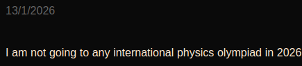

March 2026
first line of "Three regrets and painful hope":

- me
I understand that, without any proper confirmation, my past self had written out an unnecessarily dramatic hook for this site's first blogpost claiming that I won't be going to any international physics olympiad in 2026. This turned out to be wrong and I will, in fact, most likely be going to the 2026 IPhO.
3 months into this year and I'm kind of already tired by all of the backs and forth it has brought, I've not written this post earlier due to fear of having to eat my own words for a second time, but I think that things might have calmed down at this point and I should be able to explain what happened without having to start another blogpost in the same way as this one.
I still had a lot of things planned for the rest of 2026 despite having completely given up on the possibility of going to any international physics olympiad during it when the year started. I wanted to learn more advanced physics and math, I wanted to improve my coding skills, I wanted to compete in (and win) Beamline For Schools (BL4S) with the good team I had gotten into, I wanted to work on some research project, and I wanted to properly learn astro in order to perform well at the latin american astronomy olympiad and hopefully the international one (IOAA) too. (I've never stopped relishing the experience of in person olympiads). I'd pursue all of that while also preparing to apply to US universities and working for the Online Physics Olympiad for a second year in a row. The loss of the possibility of going to an international physics olympiad wasn't quite catastrophic.
For some weeks I tried to juggle all of the aforementioned fronts and a couple more, but it proved to be quite overwhelming. I also had gone on some vacations where I decided to work on a fun project that made me realize how much I enjoy working on and making things (this would come back to take many hours off me later). During those days I was offered a well paying physics related job I could sadly not take due to being 17 instead of 18, and I also found out I was completely ignorant about high school summer internships (As it turns out one can apply to those offered abroad, be accepted and have expenses covered in most of them). However, for some reason most internships closed early this year and I was only able to apply to a single one out of those I liked.
At this point, many issues were starting to emerge with my extremely diversified year. Even when completely locked in, I failed to properly distribute my time among all tasks, jumping from full focus on one to full focus on another one a different day or week. I wasn't getting any good problems written, I wasn't helping much with BL4S, and while I was learning some things it certainly didn't feel like a lot of concrete progress was being made on any front. Furthermore, the IOAA plan, which would have required getting some sponsor to pay for all expenses, started to crumble thanks to the astonishing cost that the inscription fee and the plane tickets from Argentina to Vietnam would have. That would leave me with the latin american astronomy olympiad as the only olympiad I'd be going to, and given its syllabus the preparation would be different and probably not as enjoyable as the IOAA one. That made me start to wonder if not even giving IPhO a shot, just in case nobody showed up and I was actually able to handle it, was a good idea.
Given my newfound enjoyment of projects and it looking like I would have to focus on something other than olympiads, I started asking people for some online astrophysics research internships that might be doable by me. I cold DMd a researcher that was offering a concrete internship for university students and hoped to get in anyways. I still do not know why I didn't reach out to more opportunities if landing one was my goal, but it didn't matter in the end.
The day after sending the cold email, I received a phone call from my dad urging me to go talk with him as soon as possible. He looked at me as if he were about to rebuke me, and then revealed that Argentina's 2025 IPhO team (me and the team leader) had been invited to participate in the 2026 edition of the competition. It was phrased by him as if I had been invited to take part due to last year's medal, but I'm not quite sure about that being the case. Anyways, the decision to reach out or not was off the table now and there was really nothing to lose by giving the way more affordable option for an international olympiad a go. I tried really hard to avoid going back to the mindset I pointed out in my first post and I think I have succeeded in that task.
The cold email was never answered and I was planning to spend the time I had spared for the research project on IPhO prep. I also quit Physics Cup for good as it didn't feel like it was helping a lot, however, the BL4S project was not coming along quite well. I decided to step up and do everything I could to give our team a shot at winning the whole thing. Since I find working on projects easier than aimlessly solving problems while being washed, I did not make a lot of progress on the IPhO prep front. Instead I started spending way more hours than I probably should have on the BL4S project. It was quite a crazy affair which did not end as expected (our proposal was too ambitious, kinda cooked, and we barely got it accepted after missing the deadline by a few seconds. We are 100% not winning the whole thing, but it was fun and maybe we could publish our work somewhere if we polish and fix it).
I was hating the aimlessness of my IPhO prep, so I had no better idea than to send an email asking the goat for advice on how to prepare for a second IPhO. He replied after a very short time and suggested I do as he did; learn some higher physics first, then come back to olympiad physics one month before IPhO, as that had made him jump to 5th place in his senior year participation. However since I'm nowhere near knzhou's level and I have no camp training I know that waiting until the last month would probably not be a wise idea. Therefore I settled on reading Landau's Theoretical Minimum volume I, complementing it with some problems from another book, and then taking the advice from a dear friend, Lincoln Liu, for more direct olympiad prep. I am gonna keep alternating between olympiad prep and college physics until the end of April, after which I'll go all in on IPhO. So far this is going well, reading Landau's mech book was fun and I do feel like im making some progress on my problem solving without obsessing over it and getting back into all the unhealthy thought patterns. I'm feeling good.
(I might be writing more frequent blogposts from now on)